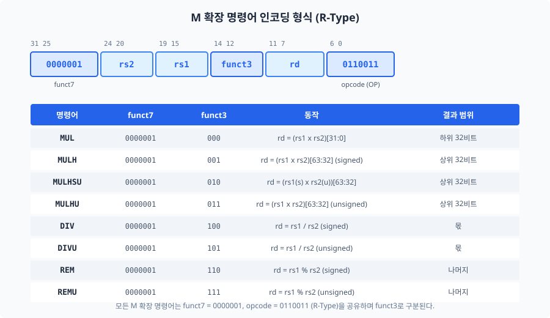
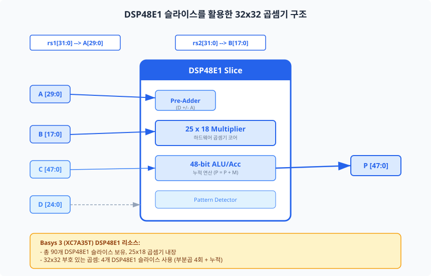
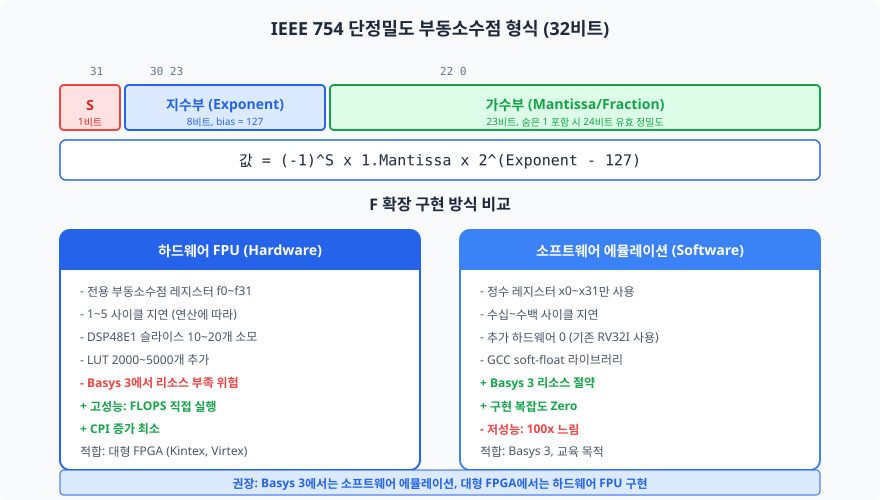
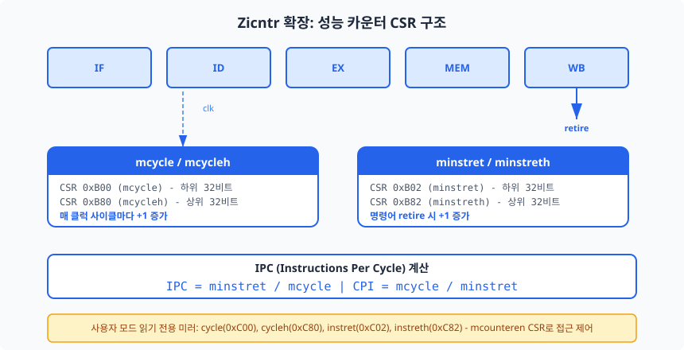
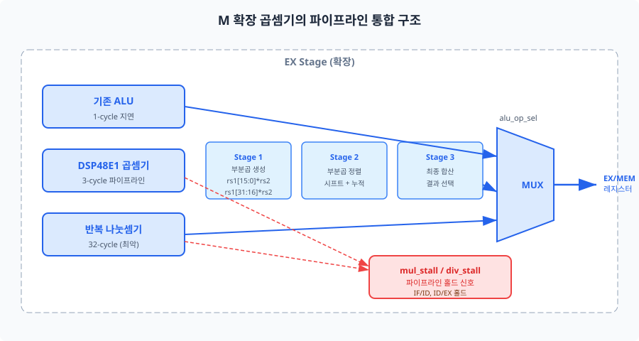

지금까지 완성한 RV32I 파이프라인 프로세서는 정수 연산만을 지원합니다. 그러나 실제 응용에서는 곱셈, 나눗셈, 부동소수점 연산이 빈번하게 요구됩니다. 이 챕터에서는 RISC-V의 모듈형 확장(Modular Extension) 철학에 따라 M 확장(곱셈/나눗셈), F 확장(단정밀도 부동소수점), Zicntr 확장(성능 카운터)을 학습하고, Basys 3의 DSP48E1 슬라이스를 활용한 곱셈기를 직접 구현합니다.
Chapter 02에서 RISC-V의 모듈형 ISA 구조를 처음 만났을 때, 기본 명령어 세트(Base Integer Instruction Set)인 RV32I에는 곱셈과 나눗셈 명령어가 포함되지 않는다는 점이 다소 의외였을 것입니다. 이는 RISC-V 설계 철학의 핵심입니다. 기본 세트를 최소화하고, 필요에 따라 확장(Extension)을 선택적으로 추가하는 방식입니다. 마치 레고 블록처럼, 기본 베이스 플레이트 위에 원하는 부품만 끼워 넣는 것과 유사합니다. 다만, 이 비유에는 한계가 있습니다 — 레고와 달리 하드웨어 확장은 면적, 전력, 타이밍에 직접적인 영향을 미치므로 신중한 트레이드오프 분석이 필요합니다.
M 확장(Standard Extension for Integer Multiplication and Division)은 RISC-V에서 가장 널리 사용되는 확장으로, 대부분의 상용 RISC-V 프로세서가 이를 포함합니다. RV32IM으로 표기하며, 기본 RV32I에 곱셈(Multiplication) 4개와 나눗셈(Division) 4개, 총 8개 명령어를 추가합니다.
M 확장의 8개 명령어는 모두 R-Type 형식을 사용합니다. 기존 RV32I의 R-Type 명령어(ADD, SUB 등)와
동일한 opcode 0110011을 공유하며, funct7 = 0000001로 구분됩니다.
즉, 기존 디코더에 funct7 검사 한 줄만 추가하면 M 확장을 식별할 수 있습니다.
이것이 RISC-V 모듈형 설계의 우아한 점입니다.

32비트 x 32비트 곱셈의 결과는 최대 64비트입니다. 하나의 명령어로 64비트 전체를 반환할 수 없으므로, RISC-V는 곱셈 결과를 두 부분으로 나누어 반환합니다.
funct3 = 000): 결과의 하위 32비트를 반환합니다.
부호에 관계없이 하위 32비트는 동일하므로, signed와 unsigned를 구분하지 않습니다.funct3 = 001): 부호 있는(signed) x 부호 있는 곱셈의 상위 32비트를 반환합니다.funct3 = 010): 부호 있는 x 부호 없는(unsigned) 곱셈의 상위 32비트를 반환합니다.
이 특이한 조합은 주소 계산 등 특수한 상황에서 사용됩니다.funct3 = 011): 부호 없는 x 부호 없는 곱셈의 상위 32비트를 반환합니다.
64비트 전체 결과가 필요한 경우, 컴파일러는 MUL(하위)과 MULH(상위) 두 명령어를
연속으로 발행합니다. RISC-V 스펙은 마이크로아키텍처가 이 패턴을 감지하여 내부적으로 하나의 곱셈만 수행하도록
최적화하는 것을 권장합니다. 이를 곱셈 융합(multiplication fusion)이라 합니다.
나눗셈은 곱셈보다 하드웨어 구현이 복잡합니다. 반복적인 뺄셈(또는 비복원 나눗셈 알고리즘)이 필요하여, 일반적으로 32사이클이 소요됩니다.
funct3 = 100): 부호 있는 나눗셈의 몫(quotient)을 반환합니다.funct3 = 101): 부호 없는 나눗셈의 몫을 반환합니다.funct3 = 110): 부호 있는 나눗셈의 나머지(remainder)를 반환합니다.funct3 = 111): 부호 없는 나눗셈의 나머지를 반환합니다.RISC-V 스펙은 나눗셈의 두 가지 예외 상황을 명확히 정의합니다.
| 예외 상황 | 조건 | DIV/DIVU 결과 | REM/REMU 결과 |
|---|---|---|---|
| 0으로 나누기 (Division by Zero) | divisor == 0 | -1 (all 1s, 0xFFFF_FFFF) |
피제수(dividend) 그대로 |
| 부호 오버플로 (Signed Overflow) | -231 / -1 | -231 (0x8000_0000) |
0 |
이 예외 처리 규칙은 x86과 다릅니다. x86에서는 0으로 나누기 시 하드웨어 예외(trap)가 발생하지만, RISC-V에서는 예외 없이 정해진 값을 반환합니다. 이 설계 결정은 하드웨어를 단순화하면서도 소프트웨어에서 결과값을 검사하여 예외를 처리할 수 있도록 합니다.
Basys 3 보드의 Artix-7 FPGA(XC7A35T)에는 DSP48E1 슬라이스 90개가 내장되어 있습니다. DSP48E1은 25x18 비트 하드웨어 곱셈기, 48비트 ALU/누적기, 프리-애더(Pre-Adder)를 하나의 슬라이스에 통합한 전용 연산 블록입니다.

32x32 비트 곱셈을 하나의 DSP48E1로 직접 처리할 수는 없습니다. 25x18 비트 곱셈기가 기본 단위이므로,
32x32 곱셈은 부분곱(Partial Product)을 생성하고 이를 합산하는 방식으로 구현합니다.
Vivado 합성 도구는 (* use_dsp = "yes" *) 속성을 인식하여 자동으로 DSP48E1 슬라이스를
추론합니다. 일반적으로 32x32 부호 있는 곱셈에 4개의 DSP48E1 슬라이스가 사용됩니다.
기존 Chapter 06에서 설계한 디코더에 M 확장을 추가하는 것은 비교적 간단합니다.
opcode == 7'b0110011 (R-Type)인 경우, funct7 == 7'b0000001을 추가로 검사하면 됩니다.
// M 확장 디코더 핵심 로직 (ch24_m_extension_decoder.sv)
always_comb begin
is_m_ext = 1'b0;
m_op = M_OP_NONE;
if (opcode == OPCODE_OP && funct7 == FUNCT7_MULDIV) begin
is_m_ext = 1'b1;
case (funct3)
3'b000: m_op = M_OP_MUL; // MUL
3'b001: m_op = M_OP_MULH; // MULH
3'b010: m_op = M_OP_MULHSU; // MULHSU
3'b011: m_op = M_OP_MULHU; // MULHU
3'b100: m_op = M_OP_DIV; // DIV
3'b101: m_op = M_OP_DIVU; // DIVU
3'b110: m_op = M_OP_REM; // REM
3'b111: m_op = M_OP_REMU; // REMU
default: is_m_ext = 1'b0;
endcase
end
end
M 확장을 5단계 파이프라인에 통합할 때 가장 중요한 문제는 다중 사이클 지연(Multi-Cycle Latency)입니다. 기존 ALU 연산은 1사이클 만에 완료되지만, 곱셈은 3사이클(파이프라인 곱셈기 기준), 나눗셈은 최대 32사이클이 소요됩니다.
이를 해결하는 전형적인 방법은 다음 두 가지입니다.
이 챕터의 설계에서는 방법 1(파이프라인 스톨)을 채택합니다. 구현이 단순하고, Basys 3의 목표 주파수(50MHz)에서 충분한 성능을 제공하기 때문입니다.
앞 절에서 정수 연산의 확장을 다루었다면, 이번 절에서는 실수 연산의 영역으로 나아갑니다. F 확장(Standard Extension for Single-Precision Floating-Point)은 IEEE 754 단정밀도 부동소수점(Single-Precision Floating-Point) 연산을 지원하며, RV32IF로 표기합니다.
부동소수점 연산은 과학 계산, 신호 처리, 그래픽스 등 광범위한 응용에서 필수적입니다. 그러나 하드웨어 구현의 복잡도가 높아, 소규모 임베디드 프로세서나 교육용 FPGA에서는 신중한 판단이 필요합니다. 이 절에서는 F 확장의 아키텍처적 특징을 이해하고, Basys 3 환경에서의 현실적인 구현 전략을 논의합니다.
IEEE 754 표준의 단정밀도 부동소수점 수는 32비트로 구성됩니다. 일상생활의 과학적 표기법(scientific notation)과 비슷합니다. 예를 들어 3.14 x 102에서 3.14가 가수부, 2가 지수부, 양수/음수 부호가 부호 비트에 해당합니다. 다만, 컴퓨터에서는 10진수 대신 2진수를 사용합니다.

| 필드 | 비트 범위 | 크기 | 역할 |
|---|---|---|---|
| 부호(Sign) | [31] | 1비트 | 0 = 양수, 1 = 음수 |
| 지수(Exponent) | [30:23] | 8비트 | 바이어스 127, 실제 지수 = 필드 - 127 |
| 가수(Mantissa) | [22:0] | 23비트 | 숨은 1(Hidden Bit) 포함 시 24비트 유효 정밀도 |
F 확장은 기존 RV32I 아키텍처에 다음과 같은 중요한 변화를 도입합니다.
| 분류 | 명령어 | 설명 |
|---|---|---|
| 산술 연산 | FADD.S, FSUB.S, FMUL.S, FDIV.S, FSQRT.S | 덧셈, 뺄셈, 곱셈, 나눗셈, 제곱근 |
| 융합 곱셈-덧셈 | FMADD.S, FMSUB.S, FNMADD.S, FNMSUB.S | a x b +/- c를 한 번의 반올림으로 수행 |
| 비교/분류 | FEQ.S, FLT.S, FLE.S, FCLASS.S | 부동소수점 비교, NaN/Inf 분류 |
| 변환 | FCVT.W.S, FCVT.S.W, FCVT.WU.S, FCVT.S.WU | 정수-부동소수점 변환 |
| 부호 조작 | FSGNJ.S, FSGNJN.S, FSGNJX.S | 부호 비트 조작 (ABS, NEG, COPYSIGN) |
| 전송 | FMV.X.W, FMV.W.X, FLW, FSW | 정수-부동소수점 레지스터 간 이동, 메모리 접근 |
F 확장 구현에는 두 가지 근본적으로 다른 접근법이 있습니다.
하드웨어 FPU(Floating-Point Unit)는 부동소수점 연산을 전용 회로로 수행합니다. FADD.S는 3~5사이클, FMUL.S는 3~8사이클, FDIV.S는 10~30사이클 정도의 지연으로 처리됩니다. 그러나 Basys 3의 XC7A35T는 LUT 20,800개, DSP48E1 90개로 리소스가 제한적입니다. 기존 파이프라인 프로세서 + 캐시 + AMBA 버스에 이미 LUT의 60~70%를 사용한 상태에서, FPU 추가는 리소스 예산을 초과할 가능성이 높습니다.
소프트웨어 에뮬레이션(Software Emulation)은 부동소수점 연산을 정수 명령어의 조합으로
수행합니다. GCC의 -msoft-float 옵션이 이를 지원합니다. 추가 하드웨어가 전혀 필요 없지만,
하나의 부동소수점 덧셈에 수십~수백 개의 정수 명령어가 필요하므로 성능이 100배 이상 저하됩니다.
본 교재의 최종 SoC는 Basys 3 위에서 동작해야 하므로, F 확장의 전체 하드웨어 구현은 권장하지 않습니다. 대신 다음과 같은 단계적 접근을 제안합니다.
RISC-V는 단정밀도(F) 외에도 D 확장(배정밀도, Double-Precision, 64비트)과 Q 확장(4배 정밀도, Quad-Precision, 128비트)을 정의합니다. D 확장은 RV64 시스템에서 일반적으로 사용되며, Q 확장은 과학 계산의 극히 높은 정밀도가 필요한 특수 환경에서 사용됩니다. 본 교재의 RV32I 환경에서는 이들을 다루지 않지만, 아키텍처적 구조는 F 확장과 동일하므로 F 확장을 이해하면 D/Q 확장으로의 확장은 자연스럽습니다.
프로세서를 설계하는 것만으로는 충분하지 않습니다. 설계한 프로세서가 얼마나 잘 동작하는지를
정량적으로 측정할 수 있어야 합니다. Chapter 21에서 mcycle과 minstret
CSR을 성능 카운터로 간략히 다루었다면, 이번 절에서는 Zicntr 확장(Standard Extension for Base Counters
and Timers)이 이 카운터들을 어떻게 표준화하는지 깊이 있게 살펴봅니다.
Zicntr 확장은 다음 세 가지 64비트 카운터를 표준화합니다. RV32 아키텍처에서 64비트 카운터는 하위 32비트와 상위 32비트를 별도의 CSR로 접근합니다.
| 카운터 | CSR 주소 (M-mode) | CSR 주소 (U-mode, 읽기전용) | 증가 조건 |
|---|---|---|---|
| mcycle / mcycleh | 0xB00 / 0xB80 | 0xC00 / 0xC80 | 매 클럭 사이클 |
| minstret / minstreth | 0xB02 / 0xB82 | 0xC02 / 0xC82 | 명령어 은퇴(retire) 시 |
| mtime / mtimeh | 메모리 매핑 (CLINT) | 0xC01 / 0xC81 (time) | 실시간 클럭 (별도 타이머) |

mcycle은 프로세서가 동작하는 동안 매 클럭 사이클마다 1씩 증가하는 64비트 카운터입니다.
구현은 매우 직관적입니다 — always_ff 블록에서 매 클럭 에지마다 +1을 수행합니다.
64비트 카운터가 오버플로우되려면, 100MHz 클럭 기준으로 약 5,845년이 걸립니다. 따라서 실질적으로 오버플로우를 걱정할 필요는 없습니다.
minstret은 WB(Write-Back) 스테이지에서 정상적으로 완료(은퇴, retire)된 명령어의
수를 셉니다. 중요한 것은, 파이프라인에서 플러시(flush)된 명령어는 세지 않는다는 점입니다.
분기 예측 실패로 취소된 명령어, 예외에 의해 중단된 명령어는 minstret에 포함되지 않습니다.
// minstret 증가 조건 (ch24_zicntr_counters.sv에서 발췌)
always_ff @(posedge clk or negedge rst_n) begin
if (!rst_n)
minstret_reg <= 64'd0;
else if (csr_wen && csr_addr == CSR_MINSTRET)
minstret_reg[31:0] <= csr_wdata; // CSR 쓰기 시 직접 설정
else if (csr_wen && csr_addr == CSR_MINSTRETH)
minstret_reg[63:32] <= csr_wdata;
else if (instr_retire)
minstret_reg <= minstret_reg + 64'd1; // 명령어 은퇴 시 증가
end
두 카운터의 비율로 프로세서의 핵심 성능 지표를 계산할 수 있습니다.
Chapter 12에서 단일 사이클(CPI=1), 멀티사이클(CPI=3~5), 파이프라인(이상적 CPI=1)을 비교했던 것을 기억하십시오. Zicntr 카운터를 사용하면 실제 프로그램 실행 중의 CPI를 정밀하게 측정할 수 있습니다. 예를 들어, 버블 정렬 프로그램의 CPI가 1.3이라면, 30%의 사이클이 해저드 스톨에 소비되고 있음을 의미합니다.
RV32 아키텍처에서 64비트 카운터를 원자적으로 읽는 것은 불가능합니다. 하위 32비트를 읽는 동안 상위 32비트가 변할 수 있기 때문입니다. RISC-V 스펙은 이를 해결하기 위해 다음과 같은 소프트웨어 패턴을 권장합니다.
// 어셈블리: 64비트 카운터 안전 읽기 패턴
// a0에 하위 32비트, a1에 상위 32비트를 반환
retry:
csrrs a1, cycleh, zero // 상위 32비트 읽기
csrrs a0, cycle, zero // 하위 32비트 읽기
csrrs a2, cycleh, zero // 상위 32비트 재읽기
bne a1, a2, retry // 상위가 변했으면 재시도
이 패턴에서 상위 32비트를 두 번 읽어 동일한지 확인합니다. 하위 32비트를 읽는 사이에 상위 비트가 캐리(carry)로 증가했다면, 처음부터 다시 읽습니다.
보안 관점에서, 성능 카운터의 사용자 모드(U-mode) 접근은 mcounteren CSR(주소 0x306)로
제어됩니다. 이 레지스터의 각 비트가 해당 카운터의 사용자 모드 읽기를 허용하거나 금지합니다.
| 비트 | 카운터 | 0: 금지 | 1: 허용 |
|---|---|---|---|
| [0] | cycle | Illegal Instruction 예외 | 사용자 모드에서 읽기 가능 |
| [1] | time | Illegal Instruction 예외 | 사용자 모드에서 읽기 가능 |
| [2] | instret | Illegal Instruction 예외 | 사용자 모드에서 읽기 가능 |
본 교재의 설계는 M-mode만 지원하므로, mcounteren의 구현은 선택 사항입니다.
그러나 향후 U-mode를 추가할 때를 대비하여 구조를 알아 두는 것이 유익합니다.
이번 절에서는 앞서 학습한 내용을 종합하여, DSP48E1 기반 곱셈기를 설계하고 기존 파이프라인 프로세서에 통합하는 미니 프로젝트를 수행합니다. 블룸 분류의 "창조(Create)" 수준에 해당하는 과제로, 단순히 코드를 따라 치는 것이 아니라 설계 결정을 내리고 트레이드오프를 평가해야 합니다.
| 항목 | 사양 |
|---|---|
| 지원 명령어 | MUL, MULH, MULHSU, MULHU (곱셈 4종) |
| 곱셈 지연 | 3사이클 (파이프라인 곱셈기) |
| DSP48E1 사용량 | 4개 이내 |
| 스톨 메커니즘 | 결과 미완료 시 파이프라인 홀드 |
| 대상 주파수 | 50MHz (Basys 3) |

전체 모듈 계층은 다음과 같습니다.
m_extension_top — M 확장 최상위 모듈
m_extension_decoder — M 확장 명령어 디코더multiplier_dsp48e1 — 3단계 파이프라인 곱셈기 (DSP48E1 추론)divider_iterative — 반복 방식 나눗셈기 (32사이클)곱셈기의 핵심은 Vivado가 DSP48E1 슬라이스를 자동 추론하도록 코딩하는 것입니다. 이를 위해 다음 두 가지 조건을 만족해야 합니다.
(* use_dsp = "yes" *)를 모듈 선언 앞에 추가하여
Vivado에게 DSP 추론을 명시적으로 요청합니다.
// 3단계 파이프라인 곱셈기 핵심 코드 (ch24_multiplier_dsp48e1.sv에서 발췌)
(* use_dsp = "yes" *)
module multiplier_dsp48e1 (
input logic clk,
input logic rst_n,
input logic start,
input logic [1:0] mul_op, // 00:MUL, 01:MULH, 10:MULHSU, 11:MULHU
input logic [31:0] operand_a,
input logic [31:0] operand_b,
output logic [31:0] result,
output logic valid
);
// 부호 확장: 33비트로 확장하여 signed/unsigned를 통일 처리
logic signed [32:0] ext_a, ext_b;
always_ff @(posedge clk or negedge rst_n) begin
if (!rst_n) begin
// 리셋 처리 ...
end else begin
// Stage 1: 입력 래치 (DSP48E1 A/B 레지스터)
stage1_a <= ext_a;
stage1_b <= ext_b;
// Stage 2: 곱셈 수행 (DSP48E1 M 레지스터)
stage2_product <= stage1_a * stage1_b;
// Stage 3: 결과 선택 (DSP48E1 P 레지스터)
case (stage2_op)
2'b00: stage3_result <= stage2_product[31:0];
default: stage3_result <= stage2_product[63:32];
endcase
end
end
endmodule
나눗셈기는 비복원 나눗셈(Non-Restoring Division) 알고리즘으로 구현합니다. 매 사이클마다 1비트의 몫을 산출하므로, 32비트 나눗셈에 32사이클이 소요됩니다. 이는 면적 효율적이지만 성능은 낮은 전형적인 트레이드오프입니다.
RISC-V 스펙이 요구하는 두 가지 특수 상황(0으로 나누기, 부호 오버플로)을 FSM의 초기 단계에서 검출하여, 해당 경우 32사이클을 기다리지 않고 즉시 결과를 반환합니다.
// 나눗셈 특수 상황 처리 (ch24_divider_iterative.sv에서 발췌)
S_IDLE: begin
if (start) begin
// RISC-V 스펙: 0으로 나누기 → 즉시 결과 반환
div_by_zero <= (divisor == 32'd0);
// RISC-V 스펙: signed overflow (-2^31 / -1)
overflow <= is_signed &&
(dividend == 32'h8000_0000) &&
(divisor == 32'hFFFF_FFFF);
end
end
M 확장 모듈을 기존 파이프라인의 EX 스테이지에 통합하는 핵심은 스톨 신호입니다. 곱셈/나눗셈이 완료될 때까지 IF, ID 스테이지를 홀드하고, EX/MEM 파이프라인 레지스터에 NOP(버블)을 삽입합니다. 이는 Chapter 10의 Load-Use 스톨과 동일한 패턴입니다.
통합 시 수정이 필요한 기존 모듈은 다음과 같습니다.
funct7 == 7'b0000001 검사 추가m_stall 신호를 기존 스톨 논리에 OR 결합곱셈기 검증은 다음의 경계값 테스트 케이스를 반드시 포함해야 합니다.
| 테스트 케이스 | operand_a | operand_b | 검증 포인트 |
|---|---|---|---|
| 0 곱셈 | 0x0000_0000 |
임의 값 | 결과가 0인지 확인 |
| 1 곱셈 | 0x0000_0001 |
임의 값 | 항등원 검증 |
| 최대 양수 x 최대 양수 | 0x7FFF_FFFF |
0x7FFF_FFFF |
MULH 상위 비트 검증 |
| -1 x -1 | 0xFFFF_FFFF |
0xFFFF_FFFF |
부호 처리 검증 |
| -1 x 1 (MULH) | 0xFFFF_FFFF |
0x0000_0001 |
MULH = 0xFFFF_FFFF |
// 테스트벤치 검증 태스크 예시 (ch24_multiplier_tb.sv에서 발췌)
task automatic check_mul(
input string test_name,
input [1:0] op,
input [31:0] a,
input [31:0] b,
input [31:0] expected
);
@(posedge clk);
mul_op = op; operand_a = a; operand_b = b; start = 1'b1;
@(posedge clk);
start = 1'b0;
repeat (3) @(posedge clk); // 3사이클 파이프라인 대기
if (result === expected)
$display("[PASS] %s", test_name);
else
$display("[FAIL] %s: got 0x%08h, exp 0x%08h", test_name, result, expected);
endtask
M 확장을 추가한 후 Basys 3에서의 리소스 사용량 변화를 예측하면 다음과 같습니다.
| 리소스 | M 확장 없이 (RV32I) | M 확장 추가 (RV32IM) | 증가량 |
|---|---|---|---|
| LUT | ~12,000 | ~13,500 | +1,500 (~7%) |
| FF | ~6,000 | ~6,800 | +800 (~2%) |
| DSP48E1 | 0 | 4 | +4 (4.4%) |
| BRAM | ~20 | ~20 | 0 |
M 확장은 DSP48E1을 4개 사용하지만, Basys 3에 90개가 있으므로 5% 미만의 사용률입니다. LUT 증가도 7% 수준으로, Basys 3의 리소스 예산 내에서 충분히 수용 가능합니다. M 확장은 비용 대비 효과가 가장 좋은 확장이라 할 수 있습니다.
funct7=0000001로 식별된다.
Basys 3의 DSP48E1 슬라이스를 활용하면 4개의 슬라이스로 32x32 곱셈을 3사이클 만에 수행할 수 있다.m_stall 신호를 기존 해저드 유닛에 OR 결합하면 된다.funct7 검사 한 줄만 추가하면
M 확장을 식별할 수 있다. 이는 ISA 설계의 직교성(orthogonality)이 구현 용이성으로 이어지는 좋은 예이다.ch24_multiplier_dsp48e1.sv를 Vivado에서 합성하고,
report_utilization으로 DSP48E1 사용량을 확인하시오.
(* use_dsp = "yes" *) 속성을 제거하면 결과가 어떻게 달라지는가?
loop:
MUL x5, x1, x2 // 곱셈
ADD x6, x5, x3 // x5 의존 → 스톨 발생
DIV x7, x6, x4 // 나눗셈
ADDI x1, x1, 1
BNE x1, x10, loop
ch24_divider_iterative.sv를 기존 5단계 파이프라인
프로세서에 통합하시오. 해저드 유닛의 스톨 로직에 div_busy 신호를 추가하고,
0으로 나누기 테스트 케이스가 RISC-V 스펙에 부합하는지 검증하시오.